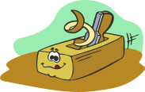

<!-- Full-width Banner Image Wrapper -->
<div class="header-banner-wrapper">
  
  <div class="banner-text-overlay">
    <h1 class="banner-title">San José Woodworkers Association</h1>
    <p class="banner-subtitle">Sharing our passion for wood</p>
  </div>
</div>

<!-- Navigation Menu (This sits on top initially, then sticks to the top on scroll) -->
<nav class="navigation-menu" id="main-nav-bar">
  <div class="nav-container">
    <!-- Optional smaller overlay branding or text -->
    <a href="index.html" class="nav-brand-container">
      
      <span class="nav-brand-text">SJWA</span>
    </a>

    <!-- Mobile Hamburger Toggle Button -->
    <button class="menu-toggle" aria-label="Toggle navigation">
      <span class="bar"></span>
      <span class="bar"></span>
      <span class="bar"></span>
    </button>

    <ul class="nav-links" id="primary-nav-list">
      <li><a href="index.html">Home</a></li>
      <li><a href="join-us.html">Join Us</a></li>
      <li><a href="history.html">History</a></li>
      <li><a href="by-laws.html">By-Laws</a></li>
      <li><a href="services.html">Services</a></li>
      <li><a href="gallery.html">Gallery</a></li>
      <li><a href="roster.html">Roster</a></li>
      <li><a href="library.html">Library</a></li>

      <!-- Dynamic Overflow 'More' Tab (Hidden by default unless needed) -->
      <li class="more-menu-item" id="overflow-more-tab">
        <a href="#" class="more-trigger-btn">More ▾</a>
        <ul class="dropdown-submenu" id="overflow-dropdown-list">
          <!-- Overflow items will be automatically injected here by JavaScript -->
        </ul>
      </li>
    </ul>
  </div>
</nav>
